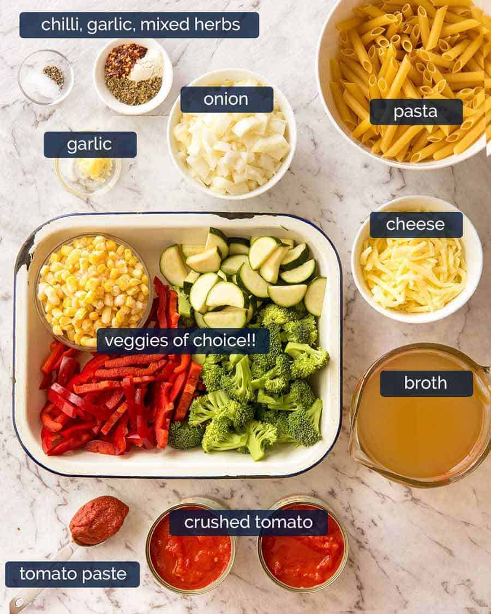

This recipe can be made with many variations. Make it your own!
Description
Risotto style pasta is one of my favorite dishes. It's like a formula to make many different meals throughout the
week. You can choose your own pasta, your own veggies, spices, cheeses, and more!
Ingredients
1 tbsp: Oil - olive oil, butter, margarine; etc
5 oz: Protein - chicken, bacon, ground meat; etc
Aromatics - garlic, onions, peppers
Veggies - carrots, broccoli, cauliflour; etc
2 tbsp: Deglazer - white wine, stock; etc
6oz: Pasta - penne, spaghetti, rigatonni; etc
Hot Liquid - water, chicken stock, tomato sauce, heavy cream; etc